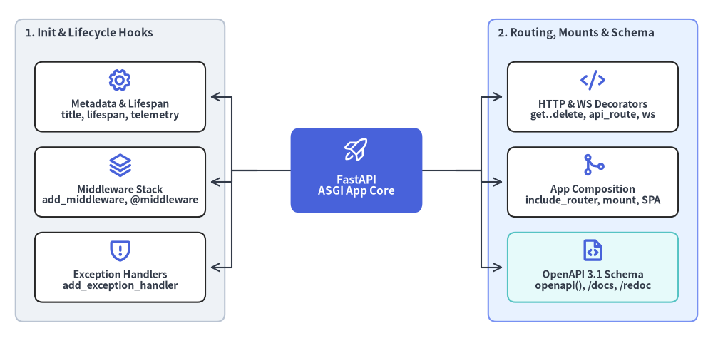

fastapi.applications
fastapi.applications モジュールは starlette.applications.Starlette を継承した中核クラス FastAPI を定義し、OpenAPI 3.1.0 メタデータ、対話型ドキュメント（/docs・/redoc）、lifespan ライフサイクル管理、ネイティブ OpenTelemetry 計装、ミドルウェアスタック、例外ハンドラ、ルーター統合、HTTP / WebSocket パスオペレーションデコレータを統括します。

classFastAPI#
ASGI アプリケーションのメインエントリポイント（from fastapi import FastAPI）であり、starlette.applications.Starlette を継承します。内部 APIRouter の初期化、HTTPException・RequestValidationError・WebSocketRequestValidationError 用既定ハンドラの登録、ネイティブ OpenTelemetry 計装の構成、および setup() による /openapi.json・/docs（Swagger UI）・/redoc（ReDoc）エンドポイントの自動登録を行います。
from fastapi import FastAPI
class FastAPI(Starlette):
def __init__(
self,
*,
telemetry: TelemetryConfig | None = None,
debug: bool = False,
routes: list[BaseRoute] | None = None, # deprecated
title: str = "FastAPI",
summary: str | None = None,
description: str = "",
version: str = "0.1.0",
openapi_url: str | None = "/openapi.json",
openapi_tags: list[dict[str, Any]] | None = None,
servers: list[dict[str, str | Any]] | None = None,
dependencies: Sequence[Depends] | None = None,
default_response_class: type[Response] = Default(JSONResponse),
redirect_slashes: bool = True,
docs_url: str | None = "/docs",
redoc_url: str | None = "/redoc",
swagger_ui_oauth2_redirect_url: str | None = "/docs/oauth2-redirect",
swagger_ui_init_oauth: dict[str, Any] | None = None,
middleware: Sequence[Middleware] | None = None,
exception_handlers: dict[
int | type[Exception],
Callable[[Request, Any], Coroutine[Any, Any, Response]],
] | None = None,
on_startup: Sequence[Callable[[], Any]] | None = None,
on_shutdown: Sequence[Callable[[], Any]] | None = None,
lifespan: Lifespan[AppType] | None = None,
terms_of_service: str | None = None,
contact: dict[str, str | Any] | None = None,
license_info: dict[str, str | Any] | None = None,
root_path: str = "", # deprecated
root_path_in_servers: bool = True,
responses: dict[int | str, dict[str, Any]] | None = None,
callbacks: list[BaseRoute] | None = None,
webhooks: APIRouter | None = None,
deprecated: bool | None = None,
include_in_schema: bool = True,
swagger_ui_parameters: dict[str, Any] | None = None,
generate_unique_id_function: Callable[[APIRoute], str] = Default(generate_unique_id),
separate_input_output_schemas: bool = True,
openapi_external_docs: dict[str, Any] | None = None,
strict_content_type: bool = True,
) -> None: ...
コンストラクタ引数#
| 引数 | 型 | デフォルト | 説明 |
|---|---|---|---|
telemetry |
TelemetryConfig | None |
None |
ネイティブ OpenTelemetry 設定辞書（tracing、metrics、logs、operation_spans、auto_configure、exclude、各種プロバイダ）。 |
debug |
bool |
False |
未処理の 500 サーバーエラー時に詳細なトレースバックを返すかどうか（Starlette から継承）。 |
routes |
list[BaseRoute] | None |
None |
非推奨。 Starlette 互換ルートリスト。通常は @app.get() や app.include_router() を使用します。 |
title |
str |
"FastAPI" |
OpenAPI の info.title およびドキュメント UI に表示される API タイトル。 |
summary |
str | None |
None |
API タイトル直下に表示される短い OpenAPI 3.1.0 要約文（info.summary）。 |
description |
str |
"" |
/docs や /redoc で描画される CommonMark Markdown 対応の説明文（info.description）。 |
version |
str |
"0.1.0" |
アプリケーション API のバージョン文字列（info.version。fastapi.__version__ とは独立）。 |
openapi_url |
str | None |
"/openapi.json" |
OpenAPI JSON スキーマの配信パス。None を設定すると /openapi.json・/docs・/redoc がすべて無効化されます。 |
openapi_tags |
list[dict[str, Any]] | None |
None |
タグの表示順や説明を定義する辞書リスト（name、description、externalDocs）。 |
servers |
list[dict[str, str | Any]] | None |
None |
OpenAPI の servers 配列へ出力される接続先サーバー定義（url、description、variables）。 |
dependencies |
Sequence[Depends] | None |
None |
サブルーターを含む全 HTTP / WebSocket パスオペレーションに適用されるグローバル Depends() / Security() リスト。 |
default_response_class |
type[Response] |
Default(JSONResponse) |
エンドポイントが辞書や Pydantic モデルを直接返した際に使用される既定の Response クラス。 |
redirect_slashes |
bool |
True |
末尾スラッシュの有無が異なるリクエストに対して自動で 307 Temporary Redirect を返すかどうか。 |
docs_url |
str | None |
"/docs" |
Swagger UI 対話型ドキュメントの配信パス（None で無効化）。 |
redoc_url |
str | None |
"/redoc" |
ReDoc ドキュメントの配信パス（None で無効化）。 |
swagger_ui_oauth2_redirect_url |
str | None |
"/docs/oauth2-redirect" |
Swagger UI の「Authorize」OAuth2 フローが使用するコールバック URL。 |
swagger_ui_init_oauth |
dict[str, Any] | None |
None |
Swagger UI に渡す OAuth2 初期設定（clientId、appName、usePkceWithAuthorizationCodeGrant 等）。 |
middleware |
Sequence[Middleware] | None |
None |
アプリ生成時に組み込む Starlette Middleware(...) のシーケンス。 |
exception_handlers |
dict[int | type[Exception], Callable] | None |
None |
HTTP ステータスコードまたは例外型と例外ハンドラ関数の初期マッピング。 |
on_startup |
Sequence[Callable[[], Any]] | None |
None |
レガシーな起動時フック一覧。新規コードでは lifespan の使用が推奨されます。 |
on_shutdown |
Sequence[Callable[[], Any]] | None |
None |
レガシーな終了時フック一覧。新規コードでは lifespan の使用が推奨されます。 |
lifespan |
Lifespan[AppType] | None |
None |
起動・終了時のリソース管理とリクエスト共有ステートを担う非同期（またはジェネレータ）コンテキストマネージャ。 |
terms_of_service |
str | None |
None |
API 利用規約ページの URL（info.termsOfService）。 |
contact |
dict[str, str | Any] | None |
None |
連絡先メタデータ辞書（name、url、email。info.contact に出力）。 |
license_info |
dict[str, str | Any] | None |
None |
ライセンス情報辞書（必須の name に加え、排他的な SPDX identifier または url）。 |
root_path |
str |
"" |
非推奨。 リバースプロキシ配下のプレフィックス。fastapi run --root-path での設定が推奨されます。 |
root_path_in_servers |
bool |
True |
ASGI root_path が指定されている場合に OpenAPI servers へ自動追加するかどうか。 |
responses |
dict[int | str, dict[str, Any]] | None |
None |
全パスオペレーションへ共通マージされる追加 OpenAPI レスポンス定義。 |
callbacks |
list[BaseRoute] | None |
None |
全パスオペレーションに付与する OpenAPI コールバックルート一覧。 |
webhooks |
APIRouter | None |
None |
OpenAPI 3.1.0 webhooks をドキュメント化するための専用 APIRouter（app.webhooks）。 |
deprecated |
bool | None |
None |
True の場合、アプリ内の全パスオペレーションを OpenAPI 上で非推奨としてマークします。 |
include_in_schema |
bool |
True |
アプリ内のルートを既定で OpenAPI スキーマに含めるかどうか。 |
swagger_ui_parameters |
dict[str, Any] | None |
None |
Swagger UI へ直接渡す設定辞書（deepLinking、persistAuthorization、docExpansion 等）。 |
generate_unique_id_function |
Callable[[APIRoute], str] |
Default(generate_unique_id) |
OpenAPI の operationId 自動生成ロジックをカスタマイズする関数（クライアント SDK 生成時に有用）。 |
separate_input_output_schemas |
bool |
True |
デフォルト値の有無により検証時と出力時で型契約が異なる場合、<Model>-Input と <Model>-Output にスキーマを分離します。 |
openapi_external_docs |
dict[str, Any] | None |
None |
トップレベル OpenAPI externalDocs 辞書（url および任意の description）。 |
strict_content_type |
bool |
True |
Content-Type ヘッダのないリクエストボディを JSON として解釈しない厳格モード（localhost への CSRF 攻撃を防止）。 |
主なインスタンス属性#
| 属性 | 型 | 説明 |
|---|---|---|
app.router |
APIRouter |
登録ルート・依存関係・lifespan を保持するルート APIRouter。 |
app.webhooks |
APIRouter |
OpenAPI 3.1.0 の webhooks 定義用 APIRouter（例: @app.webhooks.post("order-paid")）。 |
app.dependency_overrides |
dict[Callable, Callable] |
テスト時に本番の依存関数をモック関数へ差し替えるオーバーライド辞書。 |
app.state |
starlette.datastructures.State |
アプリケーション全体で共有される任意の属性格納オブジェクト。 |
app.openapi_version |
str |
app.openapi() が出力する OpenAPI 仕様バージョン文字列（既定値は "3.1.0"）。 |
app.openapi_schema |
dict[str, Any] | None |
キャッシュ済み OpenAPI スキーマ辞書。ルート変更時に自動で再生成されます。 |
使用例#
from collections.abc import AsyncIterator
from contextlib import asynccontextmanager
from fastapi import FastAPI
@asynccontextmanager
async def lifespan(app: FastAPI) -> AsyncIterator[dict[str, str]]:
app.state.started = True
yield {"region": "us-east-1"}
app = FastAPI(
title="Payments API",
summary="Idempotent ledger and settlement endpoints.",
version="2.4.0",
lifespan=lifespan,
license_info={"name": "Apache 2.0", "identifier": "Apache-2.0"},
telemetry={"tracing": True, "metrics": True},
)
methodFastAPI.get() / post() / put() / patch() / delete()#
単一の HTTP メソッドに対応するエンドポイント関数を app.router へ登録するパスオペレーションデコレータ群です。同一のキーワード引数を持つ 8 つのメソッドデコレータ（app.get()、app.post()、app.put()、app.patch()、app.delete()、app.options()、app.head()、app.trace()）が提供されています。
@app.get(
path: str,
*,
response_model: Any = Default(None),
status_code: int | None = None,
tags: list[str | Enum] | None = None,
dependencies: Sequence[Depends] | None = None,
summary: str | None = None,
description: str | None = None,
response_description: str = "Successful Response",
responses: dict[int | str, dict[str, Any]] | None = None,
deprecated: bool | None = None,
operation_id: str | None = None,
response_model_include: IncEx | None = None,
response_model_exclude: IncEx | None = None,
response_model_by_alias: bool = True,
response_model_exclude_unset: bool = False,
response_model_exclude_defaults: bool = False,
response_model_exclude_none: bool = False,
include_in_schema: bool = True,
response_class: type[Response] = Default(JSONResponse),
name: str | None = None,
callbacks: list[BaseRoute] | None = None,
openapi_extra: dict[str, Any] | None = None,
generate_unique_id_function: Callable[[APIRoute], str] = Default(generate_unique_id),
) -> Callable[[DecoratedCallable], DecoratedCallable]
引数#
| 引数 | 型 | デフォルト | 説明 |
|---|---|---|---|
path |
str |
(必須) | URL パステンプレート（例: "/items/{item_id}"）。 |
response_model |
Any |
Default(None) |
レスポンス検証・フィールド除外・JSON シリアライズ・OpenAPI 出力に用いる型。未指定時は関数の戻り値型注釈を使用し、None 明示時は検証を無効化します。 |
status_code |
int | None |
None |
正常時の既定 HTTP ステータスコード（None の場合は 200）。 |
tags |
list[str | Enum] | None |
None |
Swagger UI / ReDoc でエンドポイントを分類する OpenAPI タグ一覧。 |
dependencies |
Sequence[Depends] | None |
None |
戻り値をエンドポイント引数に渡さずに事前実行する Depends() / Security() の一覧。 |
summary |
str | None |
None |
オペレーションの短い要約文（省略時は関数名から自動生成）。 |
description |
str | None |
None |
CommonMark 対応の詳細説明（省略時は docstring の \f 以前を自動抽出）。 |
response_description |
str |
"Successful Response" |
OpenAPI のメイン成功レスポンスに付与される説明文。 |
responses |
dict[int | str, dict[str, Any]] | None |
None |
ステータスコード別の追加 OpenAPI レスポンス定義（model、description、headers 等）。 |
deprecated |
bool | None |
None |
このパスオペレーションを OpenAPI 上で非推奨として表示します。 |
operation_id |
str | None |
None |
API 全体で一意なカスタム OpenAPI operationId を明示指定します。 |
response_model_include |
IncEx | None |
None |
Pydantic シリアライズ時に含めるフィールドのホワイトリスト（set またはネスト dict）。 |
response_model_exclude |
IncEx | None |
None |
Pydantic シリアライズ時に除外するフィールドのブラックリスト（set またはネスト dict）。 |
response_model_by_alias |
bool |
True |
モデルのフィールドエイリアスを優先してシリアライズするかどうか。 |
response_model_exclude_unset |
bool |
False |
インスタンス生成時に明示セットされなかったフィールドを出力から除外します。 |
response_model_exclude_defaults |
bool |
False |
フィールド値がデフォルト値と等しい項目を出力から除外します。 |
response_model_exclude_none |
bool |
False |
値が None のフィールドをすべて出力から除外します。 |
include_in_schema |
bool |
True |
生成される OpenAPI スキーマにこのエンドポイントを含めるかどうか。 |
response_class |
type[Response] |
Default(JSONResponse) |
戻り値をラップするカスタム Response クラス（HTMLResponse、EventSourceResponse 等）。 |
name |
str | None |
None |
app.url_path_for() や request.url_for() の逆引きに使われる内部ルート名。 |
callbacks |
list[BaseRoute] | None |
None |
このオペレーションから発火する外部 Webhook コールバックの OpenAPI ルート一覧。 |
openapi_extra |
dict[str, Any] | None |
None |
OpenAPI Operation オブジェクトへマージする拡張メタデータ（x-codeSamples 等）。 |
generate_unique_id_function |
Callable[[APIRoute], str] |
Default(generate_unique_id) |
このルート専用の operationId 生成関数オーバーライド。 |
使用例#
from fastapi import FastAPI, status
from pydantic import BaseModel
app = FastAPI()
class ItemCreate(BaseModel):
name: str
price: float
class ItemOut(ItemCreate):
id: int
@app.post("/items", response_model=ItemOut, status_code=status.HTTP_201_CREATED, tags=["items"])
async def create_item(payload: ItemCreate) -> ItemOut:
return ItemOut(id=1, **payload.model_dump())
@app.delete("/items/{item_id}", status_code=status.HTTP_204_NO_CONTENT, tags=["items"])
async def delete_item(item_id: int) -> None:
return None
methodFastAPI.api_route()#
1 つのエンドポイント関数を任意の複数 HTTP メソッド（methods=["GET", "POST"] など）へ一括バインドするデコレータです。デコレータを使わず関数呼び出しで登録する場合は、同じキーワード引数を受け取る FastAPI.add_api_route(path, endpoint, *, ...) を使用します。
app.api_route(
path: str,
*,
response_model: Any = Default(None),
status_code: int | None = None,
tags: list[str | Enum] | None = None,
dependencies: Sequence[Depends] | None = None,
summary: str | None = None,
description: str | None = None,
response_description: str = "Successful Response",
responses: dict[int | str, dict[str, Any]] | None = None,
deprecated: bool | None = None,
methods: list[str] | None = None,
operation_id: str | None = None,
response_model_include: IncEx | None = None,
response_model_exclude: IncEx | None = None,
response_model_by_alias: bool = True,
response_model_exclude_unset: bool = False,
response_model_exclude_defaults: bool = False,
response_model_exclude_none: bool = False,
include_in_schema: bool = True,
response_class: type[Response] = Default(JSONResponse),
name: str | None = None,
openapi_extra: dict[str, Any] | None = None,
generate_unique_id_function: Callable[[APIRoute], str] = Default(generate_unique_id),
) -> Callable[[DecoratedCallable], DecoratedCallable]
主な引数#
| 引数 | 型 | デフォルト | 説明 |
|---|---|---|---|
path |
str |
(必須) | 受信 HTTP リクエストと照合される URL パステンプレート。 |
methods |
list[str] | None |
None |
受け付ける HTTP メソッドのリスト（None の場合は APIRoute 内で ["GET"] が既定となります）。 |
response_model .. generate_unique_id_function |
... |
(get() と同一) |
FastAPI.get() と共通のシリアライズ・OpenAPI スキーマ・依存性設定。 |
使用例#
from fastapi import FastAPI, Request
app = FastAPI()
@app.api_route("/ping", methods=["GET", "HEAD"], include_in_schema=False)
async def ping(request: Request) -> dict[str, str]:
return {"method": request.method, "ok": "true"}
methodFastAPI.websocket()#
依存性注入（Depends() / Security()）、Path・Query・Header・Cookie の型検証、および AsyncExitStack クリーンアップを備えた非同期 WebSocket エンドポイントを登録するデコレータです。関数呼び出し版の app.add_api_websocket_route(path, endpoint, name=None, *, dependencies=None) も利用できます。
app.websocket(
path: str,
name: str | None = None,
*,
dependencies: Sequence[Depends] | None = None,
) -> Callable[[DecoratedCallable], DecoratedCallable]
引数#
| 引数 | 型 | デフォルト | 説明 |
|---|---|---|---|
path |
str |
(必須) | WebSocket の URL パステンプレート（{param} パスパラメータ対応）。 |
name |
str | None |
None |
url_path_for() 逆引き用のルート名（省略時は endpoint.__name__）。 |
dependencies |
Sequence[Depends] | None |
None |
セッション開始時に評価される引数なしの Depends() / Security() リスト。 |
使用例#
from fastapi import FastAPI, WebSocket
app = FastAPI()
@app.websocket("/ws/{room}")
async def room_socket(websocket: WebSocket, room: str) -> None:
await websocket.accept()
msg = await websocket.receive_text()
await websocket.send_json({"room": room, "echo": msg})
await websocket.close()
methodFastAPI.include_router()#
APIRouter をアプリケーションへ組み込み、パスプレフィックスの連結、lifespan コンテキストの統合、tags・dependencies・responses・default_response_class の継承、および OpenAPI スキーマキャッシュの更新を行います。
app.include_router(
router: APIRouter,
*,
prefix: str = "",
tags: list[str | Enum] | None = None,
dependencies: Sequence[Depends] | None = None,
responses: dict[int | str, dict[str, Any]] | None = None,
deprecated: bool | None = None,
include_in_schema: bool = True,
default_response_class: type[Response] = Default(JSONResponse),
callbacks: list[BaseRoute] | None = None,
generate_unique_id_function: Callable[[APIRoute], str] = Default(generate_unique_id),
) -> None
引数#
| 引数 | 型 | デフォルト | 説明 |
|---|---|---|---|
router |
APIRouter |
(必須) | アプリケーションのルートツリーへ組み込む APIRouter インスタンス。 |
prefix |
str |
"" |
router 内の全ルート先頭に付与する URL プレフィックス（"/" で始まり、末尾は "/" 以外）。 |
tags |
list[str | Enum] | None |
None |
router 内の全オペレーションへ追加される OpenAPI タグ一覧。 |
dependencies |
Sequence[Depends] | None |
None |
router 内の全 HTTP / WebSocket ルート実行前に評価される依存関数リスト。 |
responses |
dict[int | str, dict[str, Any]] | None |
None |
ルーターおよび各ルートの responses とマージされる共通 OpenAPI レスポンス定義。 |
deprecated |
bool | None |
None |
True の場合、取り込むルーター内の全ルートを非推奨としてマークします。 |
include_in_schema |
bool |
True |
False の場合、router 内の全オペレーションを OpenAPI スキーマから除外します。 |
default_response_class |
type[Response] |
Default(JSONResponse) |
router 内で response_class 未指定のオペレーションに適用する既定レスポンスクラス。 |
callbacks |
list[BaseRoute] | None |
None |
router 内のオペレーションへ付与される OpenAPI コールバック定義。 |
generate_unique_id_function |
Callable[[APIRoute], str] |
Default(generate_unique_id) |
router スコープで適用するカスタム operationId 生成関数。 |
使用例#
from fastapi import APIRouter, FastAPI
users_router = APIRouter()
@users_router.get("/{user_id}")
def get_user(user_id: int) -> dict[str, int]:
return {"user_id": user_id}
app = FastAPI()
app.include_router(users_router, prefix="/v1/users", tags=["users"])
methodFastAPI.mount()#
独立した ASGI アプリケーション（StaticFiles、独自の /docs やミドルウェアを持つ別の FastAPI サブアプリ、WSGIMiddleware でラップした WSGI アプリ等）を指定パス配下へマウントします（Starlette.mount から継承）。マウントされたサブアプリは親アプリの OpenAPI スキーマからは独立しています。
app.mount(
path: str,
app: ASGIApp,
name: str | None = None,
) -> None
引数#
| 引数 | 型 | デフォルト | 説明 |
|---|---|---|---|
path |
str |
(必須) | サブアプリへ委譲する URL プレフィックス（一致部分が ASGI root_path に設定されます）。 |
app |
ASGIApp |
(必須) | 任意の ASGI 3.0 呼び出し可能オブジェクト（FastAPI、StaticFiles、WSGIMiddleware 等）。 |
name |
str | None |
None |
URL 逆引き（request.url_for(name, path=...)）で使用するマウント名。 |
使用例#
from fastapi import FastAPI
main_app = FastAPI(title="Gateway")
admin_app = FastAPI(title="Admin Sub-App")
@admin_app.get("/stats")
def admin_stats() -> dict[str, int]:
return {"active_workers": 4}
main_app.mount("/admin", admin_app, name="admin")
methodFastAPI.frontend()#
ビルド済みのシングルページアプリケーション（SPA）や静的フロントエンドディレクトリを低優先度のフォールバックルートとして配信します。通常の API パスオペレーション・サブルーター・末尾スラッシュリダイレクトがすべて先に評価され、いずれの API ルートにも一致しなかった場合のみフロントエンドファイルや SPA フォールバックが応答します。
app.frontend(
path: str,
*,
directory: str | os.PathLike[str],
fallback: Literal["auto", "index.html", "404.html"] | None = "auto",
check_dir: bool | Literal["auto"] = "auto",
) -> None
引数#
| 引数 | 型 | デフォルト | 説明 |
|---|---|---|---|
path |
str |
(必須) | フロントエンドを配信する URL パスプレフィックス（例: "/" や "/app"）。 |
directory |
str | os.PathLike[str] |
(必須) | 静的ビルド成果物が格納されたディレクトリパス（例: "dist"）。 |
fallback |
Literal["auto", "index.html", "404.html"] | None |
"auto" |
未一致パスに対するフォールバック動作（"auto" は存在する index.html または 404.html を返し、None は無効化）。 |
check_dir |
bool | Literal["auto"] |
"auto" |
起動時に directory の存在を検証するかどうか（"auto" は FASTAPI_ENV="development" 時に警告のみでスキップ）。 |
使用例#
from pathlib import Path
import tempfile
from fastapi import FastAPI
app = FastAPI()
@app.get("/api/health")
def api_health() -> dict[str, str]:
return {"status": "healthy"}
with tempfile.TemporaryDirectory() as dist_dir:
(Path(dist_dir) / "index.html").write_text("<!doctype html><title>App</title>", encoding="utf-8")
app.frontend("/", directory=dist_dir)
methodFastAPI.add_middleware()#
app.user_middleware の最外層へ ASGI ミドルウェアクラスを追加します（Starlette.add_middleware から継承）。最初のリクエスト処理によって middleware_stack が構築される前に呼び出す必要があります。
app.add_middleware(
middleware_class: _MiddlewareFactory[P],
*args: P.args,
**kwargs: P.kwargs,
) -> None
引数#
| 引数 | 型 | デフォルト | 説明 |
|---|---|---|---|
middleware_class |
_MiddlewareFactory[P] |
(必須) | (app: ASGIApp, *args, **kwargs) を受け取る ASGI ミドルウェアクラスまたはファクトリ。 |
*args, **kwargs |
Any |
— | ミドルウェア初期化時にそのまま渡される位置引数およびキーワード引数。 |
使用例#
from fastapi import FastAPI
from fastapi.middleware.cors import CORSMiddleware
from fastapi.middleware.gzip import GZipMiddleware
app = FastAPI()
app.add_middleware(GZipMiddleware, minimum_size=1000)
app.add_middleware(
CORSMiddleware,
allow_origins=["https://app.example.com"],
allow_methods=["GET", "POST"],
allow_headers=["Authorization"],
)
methodFastAPI.middleware()#
async def dispatch(request, call_next) 形式の非同期関数を Starlette の BaseHTTPMiddleware でラップしてアプリケーションへ登録するデコレータです。
app.middleware(
middleware_type: str,
) -> Callable[[DecoratedCallable], DecoratedCallable]
引数#
| 引数 | 型 | デフォルト | 説明 |
|---|---|---|---|
middleware_type |
str |
(必須) | ミドルウェア種別。現在は "http" のみサポートされています。 |
使用例#
from collections.abc import Awaitable, Callable
import time
from fastapi import FastAPI, Request, Response
app = FastAPI()
@app.middleware("http")
async def add_timing_header(
request: Request,
call_next: Callable[[Request], Awaitable[Response]],
) -> Response:
started = time.perf_counter()
response = await call_next(request)
response.headers["X-Process-Time"] = f"{time.perf_counter() - started:.4f}"
return response
methodFastAPI.add_exception_handler()#
特定の Exception サブクラスまたは HTTP 整数ステータスコードに対する同期・非同期のカスタム例外ハンドラを命令的に登録します（Starlette.add_exception_handler から継承）。
app.add_exception_handler(
exc_class_or_status_code: int | type[Exception],
handler: ExceptionHandler,
) -> None
引数#
| 引数 | 型 | デフォルト | 説明 |
|---|---|---|---|
exc_class_or_status_code |
int | type[Exception] |
(必須) | 捕捉対象の例外クラス（ValueError、RequestValidationError 等）または HTTP ステータスコード（404、500 等）。 |
handler |
Callable[[Request, Exception], Response | Awaitable[Response]] |
(必須) | (request, exc) を受け取り HTTP Response を返すハンドラ関数。 |
使用例#
from fastapi import FastAPI, Request
from fastapi.responses import JSONResponse
class QuotaExceededError(Exception):
def __init__(self, limit: int) -> None:
self.limit = limit
async def quota_handler(request: Request, exc: Exception) -> JSONResponse:
assert isinstance(exc, QuotaExceededError)
return JSONResponse(status_code=429, content={"detail": f"Limit {exc.limit} exceeded"})
app = FastAPI()
app.add_exception_handler(QuotaExceededError, quota_handler)
methodFastAPI.exception_handler()#
特定の例外クラスまたは HTTP ステータスコードに対応するカスタム例外ハンドラ関数を登録するデコレータです。
app.exception_handler(
exc_class_or_status_code: int | type[Exception],
) -> Callable[[DecoratedCallable], DecoratedCallable]
引数#
| 引数 | 型 | デフォルト | 説明 |
|---|---|---|---|
exc_class_or_status_code |
int | type[Exception] |
(必須) | デコレートした関数で捕捉する Exception サブクラスまたは HTTP ステータスコード。 |
使用例#
from fastapi import FastAPI, Request
from fastapi.responses import JSONResponse
class TenantNotFoundError(Exception):
def __init__(self, tenant_id: str) -> None:
self.tenant_id = tenant_id
app = FastAPI()
@app.exception_handler(TenantNotFoundError)
async def handle_missing_tenant(request: Request, exc: TenantNotFoundError) -> JSONResponse:
return JSONResponse(status_code=404, content={"tenant": exc.tenant_id, "error": "not_found"})
methodFastAPI.openapi()#
アプリケーション全体の OpenAPI 3.1.0 スキーマ辞書を生成・キャッシュして返します。初回呼び出し時（または前回生成以降にルートが追加・変更された場合）に内部で fastapi.openapi.utils.get_openapi() を呼び出し、結果を app.openapi_schema に保存します。生成スキーマを加工したい場合はカスタム関数を app.openapi に代入できます。
app.openapi() -> dict[str, Any]
戻り値とキャッシュ動作#
| 項目 | 型 | 説明 |
|---|---|---|
| 戻り値 | dict[str, Any] |
app.openapi_url で JSON として配信される完全な OpenAPI 3.1.0 スキーマ辞書。 |
app.openapi_schema |
dict[str, Any] | None |
app.router のルートバージョンが変化するまで再利用されるキャッシュ辞書。 |
使用例#
from typing import Any
from fastapi import FastAPI
from fastapi.openapi.utils import get_openapi
app = FastAPI(title="Billing Service", version="1.2.0")
@app.get("/invoices")
def list_invoices() -> list[dict[str, str]]:
return [{"id": "inv_01"}]
def custom_openapi() -> dict[str, Any]:
if app.openapi_schema:
return app.openapi_schema
schema = get_openapi(
title=app.title,
version=app.version,
routes=app.routes,
)
schema["info"]["x-logo"] = {"url": "https://example.com/logo.svg"}
app.openapi_schema = schema
return app.openapi_schema
app.openapi = custom_openapi # type: ignore[method-assign]